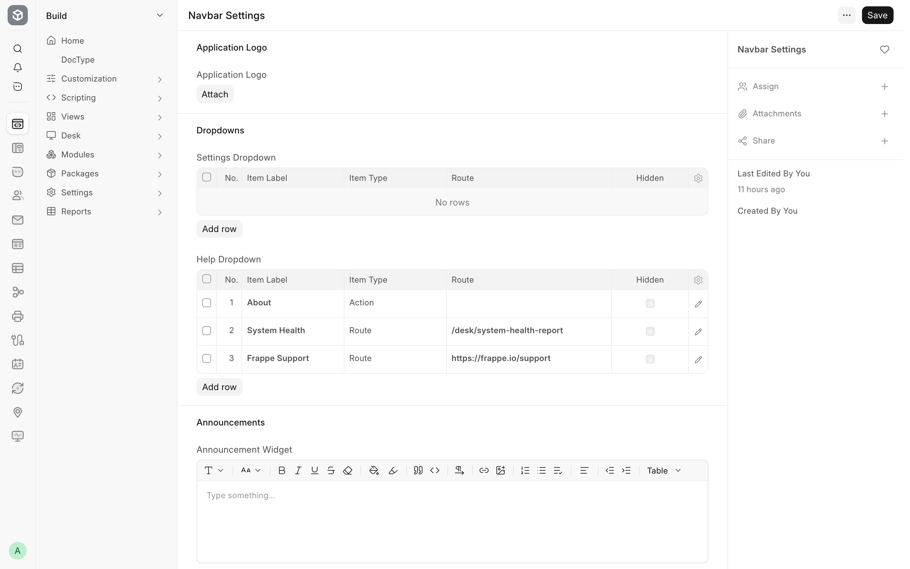

Desk Settings¶
This page is the field reference for the settings that change the desk: Navbar Settings, Desktop Settings, Global Search Settings, Domain Settings, Document Naming Settings and Notification Settings. All of them except Notification Settings are Single DocTypes that only System Manager can edit. For the general rules about settings pages, caching and code access, see How Settings Work.
Navbar Settings¶
Navbar Settings sets the application logo, the custom items of the sidebar menu and Help menu, and an announcement bar. Open it at /desk/navbar-settings. Only System Manager can edit it. After a save, the form clears the cache and reloads the desk (navbar_settings.js calls frappe.ui.toolbar.clear_cache).

Application Logo¶
| Field | Default | Effect |
|---|---|---|
Application Logo (app_logo) |
empty | Logo on the login page (frappe/www/login.py), the update password page (frappe/www/update_password.py) and the OAuth confirm page (frappe/integrations/oauth2.py). These pages use get_app_logo(). It takes the app_logo of Website Settings first, then this field, then the app_logo_url hook. The /desk/desktop page reads this field directly as its brand logo, with the Frappe app_logo_url hook as fallback (frappe/desk/page/desktop/desktop.py). |
Dropdowns¶
| Field | Default | Effect |
|---|---|---|
Settings Dropdown (settings_dropdown) |
rows from the standard_navbar_items hook (Frappe ships none) |
Table of Navbar Item rows. Rows that are not hidden show in the menu of the sidebar header (sidebar_header.js, navbar_items). |
Help Dropdown (help_dropdown) |
About, System Health, Frappe Support from the standard_help_items hook |
Table of Navbar Item rows. Rows that are not hidden show under Help in the sidebar header menu, after the help links of the current page (get_help_siblings). Rows whose action contains frappe.ui.toolbar.show_shortcuts are skipped. |
Navbar Item row fields:
| Field | Default | Effect |
|---|---|---|
Item Label (item_label) |
empty | Menu label, translated with __(). Mandatory when Item Type is Route or Action. |
Item Type (item_type) |
empty | Route, Action or Separator. Read only on standard rows. |
Route (route) |
empty | Shows when Item Type is Route, and is then mandatory. A desk route or an external URL. Read only on standard rows. |
Action (action) |
empty | Shows when Item Type is Action, and is then mandatory. JavaScript that runs with frappe.utils.eval on click. Read only on standard rows. |
Hidden (hidden) |
0 |
Hides the row from the menu. |
Is Standard (is_standard) |
0 |
Read only. Set on rows that come from hooks. bench migrate removes standard rows that no hook defines now. |
Icon (icon) |
empty | Icon of a Settings Dropdown row. The Help menu does not show it. |
Condition (condition) |
empty | JavaScript expression, run with frappe.utils.eval each time the menu opens. The row shows only when it is true. |
NavbarSettings.validate checks the label and the route or action of each Route and Action row and raises frappe.MandatoryError when one is empty.
Announcements¶
| Field | Default | Effect |
|---|---|---|
Announcement Widget (announcement_widget) |
empty | HTML shown in a bar below the header (navbar.html). When it has text, toolbar.js renders the header so the bar can show. |
Widget Color (announcement_widget_color) |
empty | Background color of the bar. Empty means var(--bg-blue). |
Is Dismissible (dismissible_announcement_widget) |
1 |
Shows a close button. A closed bar stays hidden in that browser (localStorage key dismissed_announcement_widget). When the text changes, the bar shows again. |
For developers¶
- Boot key:
frappe.boot.navbar_settingsholds the whole document (frappe/sessions.pyusesfrappe.client_cache.get_doc). frappe.boot.app_logo_urlholds the result ofget_app_logo(). No desk JavaScript reads it in this version.- Add menu items from an app with hooks.
frappe/utils/install.py(add_standard_navbar_items) fills the tables on install.sync_standard_items()runs on everybench migrateand adds rows whoseitem_labelis not in the table yet.
# sample_app/hooks.py
standard_navbar_items = [
{
"item_label": "Sample Orders",
"item_type": "Route",
"route": "/desk/sample-order",
"is_standard": 1,
},
]
standard_help_items = [
{
"item_label": "Sample Docs",
"item_type": "Route",
"route": "https://example.com/docs",
"is_standard": 1,
},
]
Note
Set "is_standard": 1 in hook items. The migrate sync removes only standard rows when you delete them from the hook. A row without the flag stays in the table.
Desktop Settings¶
Desktop Settings selects what the desktop page shows and the style of the desktop icons. Open it at /desk/desktop-settings. Only System Manager can edit it. The Visit Desktop button opens /desk/desktop.
Fields¶
| Field | Default | Effect |
|---|---|---|
Desktop Page (desktop_page) |
Apps |
Apps shows the apps screen built from the add_to_apps_screen hook. Desktop Icons shows the grid of Desktop Icon records that users can arrange. Read by get_desktop_page() into frappe.boot.desktop_page, which frappe/desk/page/desktop/desktop.js checks. |
Icon Style (icon_style) |
Solid |
Solid or Subtle. Read by get_icon_style() in frappe/boot.py into frappe.boot.desktop_icon_style. frappe.utils uses it for letter icons (utils.js) and desktop_icons_item.html uses it for the icon image. |
Side effects in DesktopSettings.on_update, only when desktop_page changes:
- Frappe clears the whole cache, so every user gets a new boot.
- When the new value is
Desktop Icons, a background job (seed_desktop_icons) creates the desktop icons for all installed apps and public workspaces. It runs after commit.
Note
The desktop_page field is being retired (see frappe/desk/RETIRING.md). A patch moved sites that already had desktop icons to Desktop Icons. Those sites show a prompt that invites users to switch to Apps (frappe/utils/new_navigation_nudge.py).
Global Search Settings¶
Global Search Settings lists the DocTypes that global search covers, in priority order. Open it at /desk/global-search-settings. System Manager can edit it. Desk User can read it.
Fields¶
| Field | Default | Effect |
|---|---|---|
Search Priorities (allowed_in_global_search) |
DocTypes from the global_search_doctypes hook |
Table of Global Search DocType rows. Only these DocTypes are searched. Results are sorted by row order first, then by relevance (frappe/utils/global_search.py, search and sort_search_results). The search dialog (frappe/public/js/frappe/ui/toolbar/search.js) pins the first 5 rows as default DocType filters. |
Global Search DocType row fields:
| Field | Default | Effect |
|---|---|---|
Document Type (document_type) |
empty | Link to DocType. The link filter hides Core module DocTypes. |
Configure (configure) |
button | Opens a dialog to select the fields of the DocType that are indexed. The selection is saved as Property Setters for in_global_search and show_name_in_global_search, the same way as Customize Form. Then a background job rebuilds the index for the DocType. |
Validation in GlobalSearchSettings.validate:
- A DocType of the
Coremodule raises "Core Modules {0} cannot be searched in Global Search." - A DocType in two rows raises "Document Type {0} has been repeated."
- After validation, the cached priority list (
global_search/search_prioritiesin the cache) is deleted.
The Reset button replaces the table with the DocTypes from the global_search_doctypes hook of every active app. It uses the Default key and the keys of the active domains. A progress bar shows over realtime.
For developers¶
- Read the list:
frappe.desk.doctype.global_search_settings.global_search_settings.get_doctypes_for_global_search(). It is cached. - The Global Search tab of the DocType settings panel in a form (
frappe/public/js/frappe/form/doctype_settings/tabs/global_search.js) adds or removes the DocType row in this table. - Add your DocTypes for the Reset button. An optional
indexsets the position:
# sample_app/hooks.py
global_search_doctypes = {
"Default": [
{"doctype": "Sample Order", "index": 0},
{"doctype": "Sample Item"},
]
}
Domain Settings¶
Domain Settings turns on domains. A domain is a set of modules, roles and custom fields that an app makes available only when the domain is active. Open it at /desk/domain-settings. Only System Manager can edit it. Frappe itself defines no domains, so on a site with only Frappe the list is empty.
Active Domains¶
| Field | Default | Effect |
|---|---|---|
Domains HTML (domains_html) |
not stored | A checkbox for each Domain record (frappe.boot.all_domains). Checked boxes fill active_domains on save (domain_settings.js). |
Active Domains (active_domains) |
empty | Hidden, read only table of Has Domain rows (field domain, Link to Domain). frappe.get_active_domains() reads it. The result is cached and is also in frappe.boot.active_domains. |
Side effects in DomainSettings.on_update:
- For each active domain,
Domain.setup_domain()runs. It enables the restricted roles, gives them to the current user, applies property setters and values, creates custom fields and callson_setup. restrict_roles_and_modules()setsrestrict_to_domainon the domain'sModule DefandRolerecords. For each inactive domain, it disables its roles, removes them from all users and deletes its custom fields.- Frappe clears the whole cache.
Where the active domains take effect:
- DocTypes, modules and roles with
restrict_to_domainset to an inactive domain are hidden from the user (frappe/utils/user.py,frappe/desk/desktop.py). - The Reset button of Global Search Settings uses the
global_search_doctypesentries of the active domains.
For developers¶
Declare a domain in your app. The module must have a data dict. Keys that frappe/core/doctype/domain/domain.py and domain_settings.py read: modules, restricted_roles, custom_fields, properties, set_value, on_setup, default_portal_role, allow_sidebar_items, remove_sidebar_items.
# sample_app/hooks.py
domains = {
"Sample Domain": "sample_app.domains.sample_domain",
}
# sample_app/domains/sample_domain.py
data = {
"modules": ["Sample App"],
"restricted_roles": ["Sample Role"],
}
Activate domains from code with frappe.get_single("Domain Settings").set_active_domains(["Sample Domain"]). It saves only when it adds a domain.
Document Naming Settings¶
Document Naming Settings is a tool to edit naming series options, change series counters and set how amended documents are named. Open it at /desk/document-naming-settings. Only System Manager can edit it. The form has no Save button (frm.disable_save()). Each section has its own button. Most fields are work fields: they hold input for a button and have no effect on their own. For naming rules in general, see Naming.
Setup Series for transactions¶
| Field | Default | Effect |
|---|---|---|
Select Transaction (transaction_type) |
empty | DocType to edit. The list has the DocTypes with a naming_series field that you can read. Selecting one loads its current options. |
Series List for this Transaction (naming_series_options) |
empty | Shows when a DocType is selected. One series per line. Update writes them as the options Property Setter of the naming_series field. The first line becomes the default Property Setter. |
User must always select (user_must_always_select) |
0 |
Shows when a DocType is selected. On Update, an empty first option is added, so the default is empty and the user must select a series. |
Update (update) |
button | Runs update_series. Each series is validated. A series that another DocType already uses is rejected. Clears the DocType cache. |
Try a Naming Series (try_naming_series) |
empty | Shows when a DocType is selected. Enter a series to get a preview. Field values in the series come from the last document of the DocType. |
Preview of generated names (series_preview) |
empty | Read only. The names that preview_series returns. |
Help HTML (help_html) |
static | Shows when a DocType is selected. Help text about series syntax. |
Update Series Counter¶
| Field | Default | Effect |
|---|---|---|
Prefix (prefix) |
empty | Series prefix from tabSeries and from series templates. Selecting one loads its counter into Current Value. |
Current Value (current_value) |
0 |
The number of the last document made with the prefix. Change it, then click the button. |
Update Series Number (update_series_start) |
button | Runs update_series_start. Only System Manager can run it. Sets the counter and adds a Version record for the Series change. |
Warning
A counter set lower than an existing name makes the next insert fail with a duplicate name.
Amended Documents¶
| Field | Default | Effect |
|---|---|---|
Default Amendment Naming (default_amend_naming) |
Amend Counter |
Amend Counter names an amended document <original>-1, <original>-2 and so on. Default Naming names it like a new document. Read by _set_amended_name in frappe/model/naming.py when no override exists for the DocType. |
Amendment Naming Override (amend_naming_override) |
empty | Table of Amended Document Naming Settings rows. Each row sets the rule for one DocType. |
Update Amendment Naming (update_amendment_naming) |
button | Runs update_amendment_rule. Saves the default and the override rows, and deletes rows that you removed. |
Amended Document Naming Settings row fields:
| Field | Default | Effect |
|---|---|---|
DocType (document_type) |
none, required | Link to DocType. The filter shows only submittable DocTypes. |
Action (action) |
Amend Counter |
Rule for this DocType. Read with frappe.db.get_value(..., cache=True) in _set_amended_name. |
For developers¶
- Only
default_amend_namingand the override rows affect other code. Read the default withfrappe.db.get_single_value("Document Naming Settings", "default_amend_naming"). - The series options are not stored on this DocType. They are Property Setters on the target DocType's
naming_seriesfield. Ship them in your app as aProperty Setterfixture. - The DocType settings panel of a form (
frappe/public/js/frappe/form/doctype_settings/tabs/naming.js) andfrappe.ui.NamingSeriesDialogcall the same whitelisted methods.
Notification Settings¶
Notification Settings is not a Single. Each user has one record, named after the user. Frappe creates it when the user is inserted, or at the first desk boot if it is missing. Open your own record from the notification panel (Notification Settings), or go to /desk/notification-settings/<user>. Each user can read and write only their own record. System Manager can open all records except Administrator's (has_permission and get_permission_query_conditions hooks). After a save, the user's cached notification config is cleared.
Fields¶
| Field | Default | Effect |
|---|---|---|
Enable System Notification (enabled) |
1 |
When off, Frappe makes no Notification Log for the user (_get_user_ids in notification_log.py). Frappe sets it to match the user's enabled flag when a user is enabled or disabled. |
Open Documents (subscribed_documents) |
empty | Table MultiSelect of Notification Subscribed Document rows (document, Link to DocType). When it has rows, the open-document counts of the notification config contain only these DocTypes (get_notification_config in frappe/desk/notifications.py). Empty means all DocTypes. |
Email Settings¶
| Field | Default | Effect |
|---|---|---|
Enable Email Notifications (enable_email_notifications) |
1 |
Master switch. When off, the user gets no notification emails of any type. |
Email me for these notification types (email_notification_types) |
every enabled Notification Type except the ones in the notification_skip_email_types hook |
Shows when emails are on. Hidden table of Notification Type Preference rows (notification_type). An allow-list: a Notification Log sends an email only when its type is in the list (is_email_notifications_enabled_for_type). An empty list means no emails. In-app notifications are not affected. |
Email me for these notification types (email_notification_types_html) |
not stored | Shows when emails are on. Checkbox grid that edits email_notification_types. Its options come from get_emailable_notification_types. |
Email Threads on Assigned Document (enable_email_threads_on_assigned_document) |
1 |
Shows when emails are on. Emails the user when an email arrives on a document assigned to them (frappe/core/doctype/communication/mixins.py). |
Event Reminders (enable_email_event_reminders) |
1 |
Shows when emails are on. Emails reminders for events (frappe/desk/doctype/event/event.py). |
Mentions (enable_email_mention) |
1 |
Hidden. Not read by Frappe code. Replaced by email_notification_types. A v16 patch used it once to fill the new table. |
Assignments (enable_email_assignment) |
1 |
Hidden. Not read by Frappe code. Replaced by email_notification_types. |
Document Share (enable_email_share) |
1 |
Hidden. Not read by Frappe code. Replaced by email_notification_types. |
Seen (seen) |
0 |
Hidden. Set to 1 when the user opens the notification panel and to 0 when a new notification arrives (notifications.js, set_seen_value). |
For developers¶
- Boot key:
frappe.boot.notification_settingsholds the current user's record. - Check settings in Python with the helpers in
frappe/desk/doctype/notification_settings/notification_settings.py:is_notifications_enabled(user),is_email_notifications_enabled(user),is_email_notifications_enabled_for_type(user, notification_type)andis_email_enabled_for_feature(user, fieldname). Each returnsTruewhen the user has no record. - Use
is_email_enabled_for_featureonly for the per-feature checkboxes. Useis_email_notifications_enabled_for_typefor aNotification Typename such asMention.